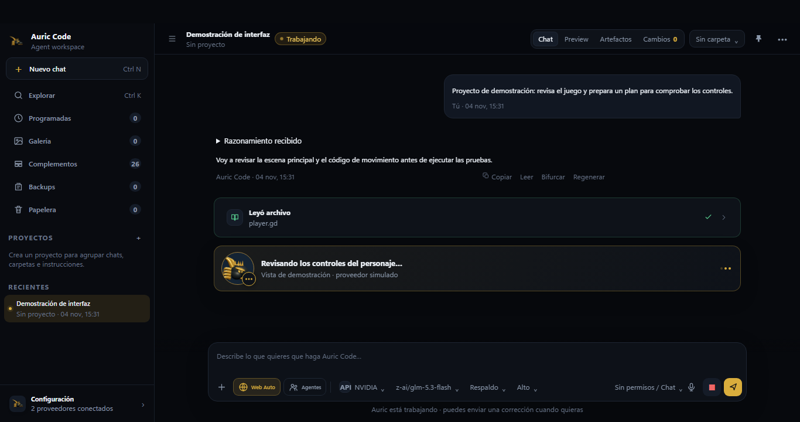

Para Windows · versión disponible
Tu código.
Tu elección de IA.
Un espacio de trabajo para construir con agentes, conectar tus proveedores y seguir cada paso hasta la comprobación.
0.18.0 · Instalador de 64 bits · App gratuita

De la idea a la comprobación
Más contexto.
Más claridad al trabajar.
Da un encargo, observa los avances y revisa el resultado. Las herramientas conservan sus detalles para que puedas abrirlos cuando los necesites.
Un espacio, varios proveedores
Trabaja con la IA
que tenga sentido para ti.
Conecta tus propias claves de API o usa las opciones incluidas que estén disponibles. También puedes trabajar con modelos en tu PC mediante Ollama.
Entender las opciones gratuitasLa disponibilidad, el acceso gratuito y los límites dependen de cada proveedor.
Empieza con un proyecto
Abre la carpeta.
Construye desde ahí.
Instala AuricCode, elige un modelo y dale una tarea concreta. La guía integrada te ayuda a usar Preview, permisos, conexiones y herramientas.
AuricCode para Windows
Versión 0.18.0 · 64 bits
El instalador descarga el motor de escritorio en la primera instalación. Necesitas conexión a internet.
Comprobar la descarga
Huella SHA-256 del instalador:
Consultando la huella publicada…Guía de instalación
Instala AuricCode
en Windows.
El instalador oficial realiza la configuración inicial. No necesitas compilar código fuente ni instalar herramientas de programación.
- Descarga el instaladorUtiliza el botón de Windows de esta página y, si lo deseas, comprueba su huella SHA-256.
- Ejecuta el archivoAbre el EXE descargado. Si Windows advierte que el editor no está firmado, verifica primero el origen y la integridad del archivo.
- Completa la instalaciónLa primera ejecución descarga los componentes de escritorio necesarios y verifica el paquete.
- Abre tu primer proyectoSelecciona una carpeta, elige un modelo disponible y utiliza los permisos para controlar qué puede hacer el agente.
Antes de empezar
Lo que conviene saber.
¿Es gratis?
La aplicación se distribuye gratis. Hay opciones de IA con cupo gratuito, pero los límites y requisitos pertenecen a cada proveedor. Conectar una API de pago puede generar cargos en tu cuenta. AuricCode también permite usar modelos locales.
¿Qué significa usar mi propia clave?
Es una clave de API que creas en la cuenta del proveedor. AuricCode la guarda cifrada en tu equipo y la usa para conectarse a ese servicio. Una suscripción a la página de chat de un proveedor no suele incluir su API.
¿Puedo ver lo que hace el agente?
El chat muestra su actividad y permite abrir detalles, pruebas y capturas. Preview sirve para páginas web y ventanas conectadas, como un juego en ejecución. Para interpretar imágenes, el modelo elegido debe tener visión.
¿El navegador usa mi ratón?
Las operaciones habituales del navegador del agente usan sus controles de página. La función opcional Control de Windows sí comparte tu ratón y teclado reales al manejar programas nativos.
¿Cómo se actualiza?
En la app puedes buscar versiones nuevas y descargar un instalador cuya huella se verifica antes de abrirlo. Tus conversaciones y ajustes permanecen en tu perfil. Los catálogos de modelos se actualizan por separado.
¿Cómo instalo AuricCode en Windows?
Descarga el instalador desde la sección oficial, ábrelo y sigue el asistente. La primera instalación necesita conexión para descargar y verificar el motor de escritorio. Puedes comprobar la huella SHA-256 antes de ejecutar el archivo.